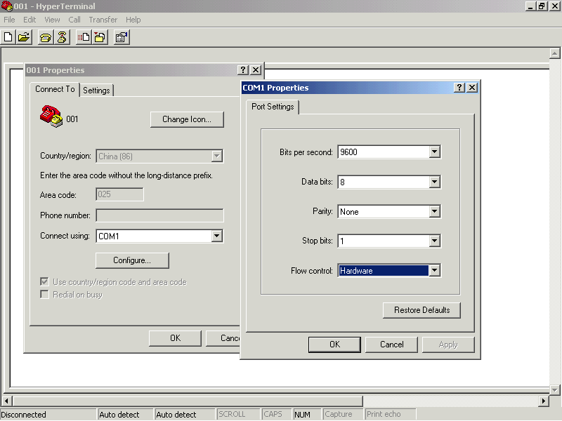

串口调试工具
1，超级终端：XP自带。

2，串口调试工具sscom等
虚拟串口com0com
The Null-modem emulator (com0com) is a kernel-mode virtual serial port driver for Windows. You can create an unlimited number of virtual COM port pairs and use any pair to connect one COM port based application to another.
com0com是windows内核模式下的虚拟串口驱动程序。可以创建虚拟串口对来连接两个COM端口。
使用方法：
1.有图形界面，直接连线操作。
或2.命令行方式：
安装后开始菜单下会有com0com/setup command prompt
可以启动一个命令行：
输入help获得帮助信息
比如说要连接COM3和COM4
可以输入命令：
install PortName=COM3 PortName=COM4
这样串口3发送的数据就会被串口4接收。反过来也是一样的。
没有实际串口的电脑也可以调试串口程序了，只要你在一个串口端虚拟一个自己需要的数据源就可以对你的串口程序进行调试了。
通过实验，串口可以被虚拟机VMWare中的linux系统正确识别。还可以用来辅助linux串口程序的调试。
甚至成为了主机和虚拟机通讯的一个通道。要怎么用可以随便发挥了...
Com0com http://com0com.sourceforge.net/ (具有已签名的驱动程序可获得）http://code.google.com/p/powersdr-iq/downloads/list http://pete.akeo.ie/2011/07/com0com-signed-drivers.html